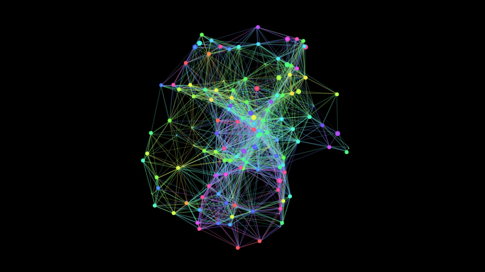

From Action to Form
Observe how elements, actions, processes, and interactions reveal themselves
A space where elements, actions, and processes come alive — where their rhythm, consequences, and interactions take shape
Explore the HorizonsObserve how elements, actions, processes, and interactions reveal themselves
A space where elements, actions, and processes come alive — where their rhythm, consequences, and interactions take shape
Explore the Horizons
Dinamisks NFT mākslas projekts uz Sepolia testnet ar unikālu ģenerēšanu.
Pāriet pie projektaKonsekventa dizaina sistēma mūsdienu web lietotnēm ar komponentu bibliotēku.
Pāriet pie projektaInteliģenta e-veikala platforma ar ML ieteikumu sistēmu un personalizētu pieredzi.
Pāriet pie projektaThis is a space.
A space where actions, interactions, and digital processes take form. Where movement becomes visible. Where change leaves a trace.
The space exists to observe — not to optimize or control. To explore patterns, rhythms, and relationships as they emerge.
Horizons appear over time. Each one opens a new way to look, interact, or perceive. They are not steps in a plan — they are moments of focus.
NFTs belong to this space as artifacts.
Genesis NFTs mark the beginning. Access NFTs open doors to specific horizons.
Nothing here asks for belief in the future. What exists, exists now — visible and usable.
The space grows through presence, exploration, and time.